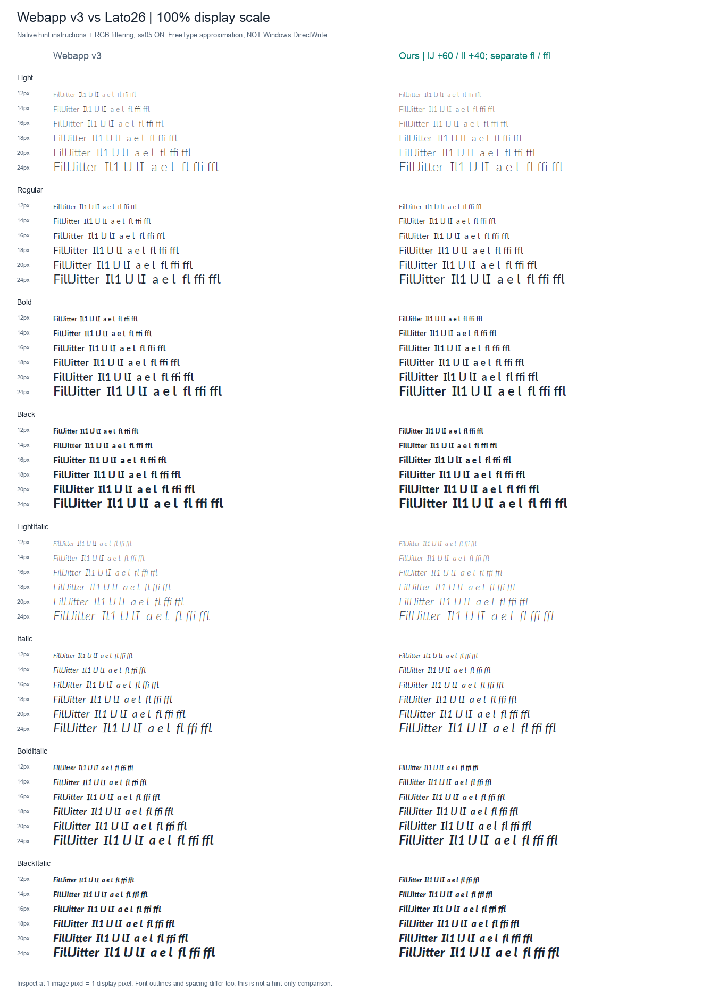

Existing repository FreeType RGB simulation, NOT a Windows DirectWrite capture. ss05 enabled on both sides.
PNG images are native pixels. View at 100% browser zoom; high-DPI displays may still map CSS pixels differently. Hint-control images use explicit 3x nearest-neighbor enlargement.
Cross-font samples include design and spacing differences. Hint ON/OFF pairs isolate hinting within each font.
